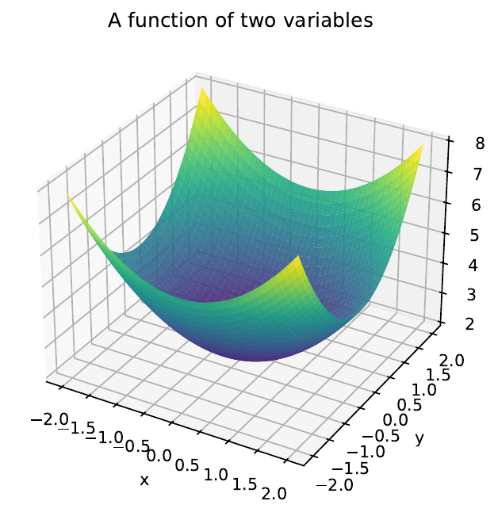
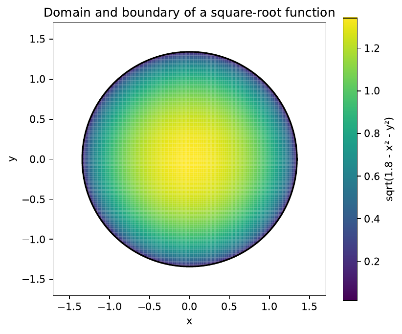
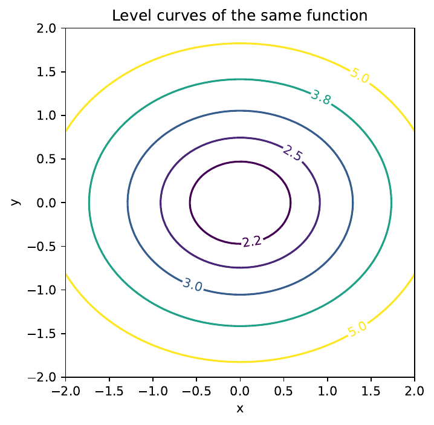
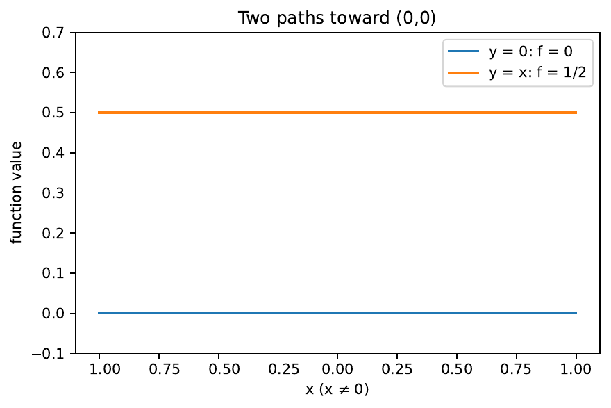
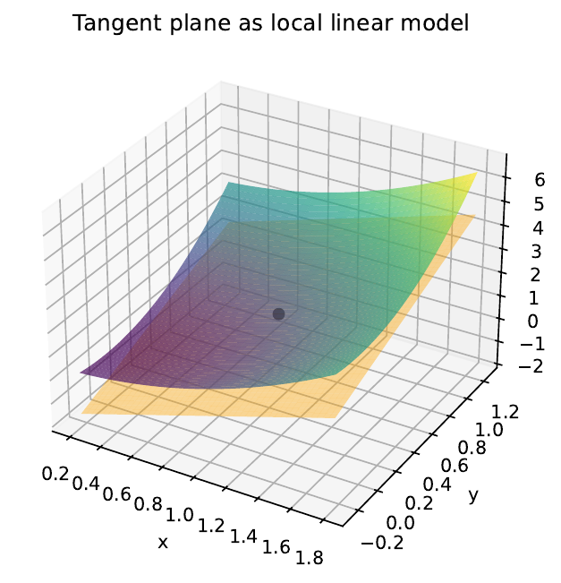
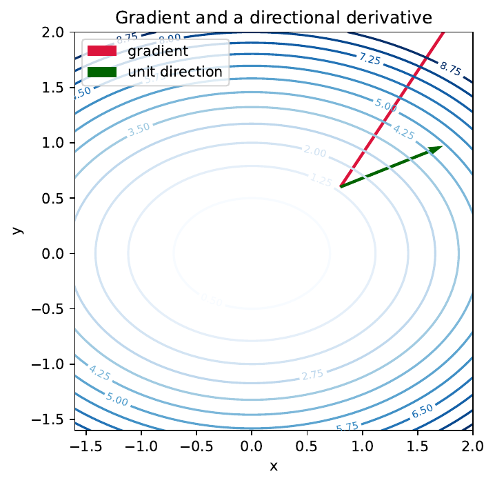

3. Functions of Several Variables and Partial Differentiation
Learning. After completing this chapter, you should be able to identify domains and level sets; explain multivariable limits and continuity; compute partial and mixed partial derivatives; distinguish partial derivatives from differentiability; construct tangent planes and linear approximations; use the chain rule in several forms; calculate implicit derivatives; interpret directional derivatives and the gradient; and verify symbolic formulas and numerical approximations using both R and Python.
Interactive investigation: Tangent planes
Explore f(x,y)=x²+y² and its tangent plane at (a,0).
Explore: How does the slope change with a? Where does the plane touch the surface?
From one input to many
In single-variable calculus, a graph \(y=f(x)\) associates one output with each permissible input. In multivariable calculus, the same idea extends to a map \(f:D\subseteq\mathbb{R}^n\to\mathbb{R}\) or to a vector-valued map \(\boldsymbol{F}:D\subseteq\mathbb{R}^n\to\mathbb{R}^m\). The domain \(D\) must be specified: formulas alone do not always determine a meaningful physical or mathematical model. A function of two variables has a graph in three-dimensional space, \[\operatorname{graph}(f)=\{(x,y,z): (x,y)\in D,\ z=f(x,y)\}.\] The graph of a function of three variables generally requires four coordinates and cannot be viewed as an ordinary surface in \(\mathbb{R}^3\). Instead, we study its level surfaces, slices, and numerical summaries.
Example — A temperature model. Suppose a thin metal plate has temperature \(T(x,y)=20+3x^2+2y^2\) degrees Celsius, where \(x,y\) are measured in meters. The temperature at \((1,-2)\) is \(31\) degrees Celsius. Its level set \(T=26\) is the ellipse \(3x^2+2y^2=6\). The formula represents a spatial field, not the motion of a particle.

Domains and boundary behavior
The natural domain of a real-valued formula is the set of inputs where all operations are defined in the real numbers. Denominators cannot vanish, even roots require nonnegative radicands, and logarithms require positive arguments. Domain restrictions can interact.
Example — Combining restrictions. For \(f(x,y)=\dfrac{\sqrt{9-x^2-y^2}}{x-y}\), the domain is the closed disk \(x^2+y^2\le9\) with the line \(x=y\) removed. Its boundary includes points on the circle and points of the excluded diagonal lying in the disk. The function need not approach a finite value near every boundary point.

Checkpoint. Describe the domain of \(g(x,y)=\log(4-x^2-y^2)/(x+1)\), and decide which portions of its boundary are included.
Level curves, level surfaces, and traces
A level curve of \(f:\mathbb{R}^2\to\mathbb{R}\) is the set \(f(x,y)=c\) for a fixed value \(c\). A level surface of \(F:\mathbb{R}^3\to\mathbb{R}\) is the set \(F(x,y,z)=c\). These sets are often more informative than a perspective drawing: topographic maps, pressure contours, and isotherms use the same principle.
Example — Elliptical contours. For \(f(x,y)=2+0.6x^2+0.9y^2\), a level \(c>2\) satisfies \(0.6x^2+0.9y^2=c-2\). These are ellipses; the level \(c=2\) is the single point \((0,0)\); levels below \(2\) are empty. Larger contour spacing in a fixed direction corresponds to slower change in that direction.

A trace is the intersection of a graph with a plane such as \(x=a\) or \(y=b\). Traces reduce a multivariable question to a familiar single-variable question. For instance, fixing \(y=b\) in \(z=x^2+2y^2\) produces the parabola \(z=x^2+2b^2\).
Computational preview: graphs and contours
Remark — Computational follow-up. The same mathematical question is revisited with complete R and Python implementations in the paired laboratories later in this chapter.
Interpretation. The code creates a rectangular grid of input pairs and evaluates the function on that grid. The contour algorithm approximates intersections of the surface with horizontal planes. Increasing grid resolution improves the display but does not change the underlying function.
Limits in more than one dimension
Definition — Limit. Let \(f:D\subseteq\mathbb{R}^n\to\mathbb{R}\) and let \(\boldsymbol{a}\) be an accumulation point of \(D\). We say \(\lim_{\boldsymbol{x}\to\boldsymbol{a}}f(\boldsymbol{x})=L\) if, for every \(\varepsilon>0\), there exists \(\delta>0\) such that \(\boldsymbol{x}\in D\) and \(0<\left\lVert \boldsymbol{x}-\boldsymbol{a}\right\rVert<\delta\) imply \(|f(\boldsymbol{x})-L|<\varepsilon\).
Unlike a one-variable limit, the point can be approached along infinitely many paths. A limit exists only if the same value is approached along every permissible route. Testing a few paths can disprove a limit, but cannot generally prove that a limit exists.
Example — A path-dependent expression. Consider \[h(x,y)=\frac{xy}{x^2+y^2},\qquad (x,y)\ne(0,0).\] Along \(y=0\), \(h(x,0)=0\). Along \(y=x\), \(h(x,x)=1/2\) for \(x\ne0\). Since the limiting values differ, \(\lim_{(x,y)\to(0,0)}h(x,y)\) does not exist.

Why a successful path test is not a proof
Suppose \(q(x,y)=\dfrac{x^2y}{x^4+y^2}\) away from \((0,0)\). Along any straight line \(y=mx\), substitution yields \(mx/(x^2+m^2)\) when \(m\ne0\), which approaches zero; the horizontal line also gives zero. But along the curved path \(y=x^2\), \[q(x,x^2)=\frac{x^4}{2x^4}=\frac12.\] Therefore the limit fails despite agreement along all straight lines. The general lesson is to search for curves that balance terms of different polynomial degrees.
Proving a limit with inequalities
Proposition. The function \(p(x,y)=\dfrac{x^2y}{x^2+y^2}\), defined away from the origin, satisfies \(\lim_{(x,y)\to(0,0)}p(x,y)=0\).
Proof. Because \(0\le x^2/(x^2+y^2)\le1\), \[|p(x,y)|=|y|\frac{x^2}{x^2+y^2}\le |y|\le\sqrt{x^2+y^2}.\] As the distance to the origin tends to zero, the upper bound tends to zero. The squeeze theorem proves the claim.
Polar coordinates as a limit tool
Write \(x=r\cos\theta\), \(y=r\sin\theta\) and \(r=\sqrt{x^2+y^2}\). If \(|f(r\cos\theta,r\sin\theta)-L|\le M(r)\) for all angles and \(M(r)\to0\) as \(r\to0\), then the limit is \(L\). The uniformity in angle matters. For example, \[\left|\frac{x^2y}{x^2+y^2}\right|=r|\cos^2\theta\sin\theta|\le r,\] which immediately proves convergence to zero.
Continuity and compositions
Definition — Continuity. A function \(f:D\to\mathbb{R}\) is continuous at \(\boldsymbol{a}\in D\) if \(\lim_{\boldsymbol{x}\to\boldsymbol{a}}f(\boldsymbol{x})=f(\boldsymbol{a})\), with the limit taken through points of \(D\).
Polynomials are continuous everywhere, and rational functions are continuous where denominators do not vanish. Sums, products, quotients (with nonzero denominators), and compositions preserve continuity under the usual domain conditions.
Example — A removable discontinuity. Define \(f(x,y)=(x^2+y^2)\sin\!\left(1/(x^2+y^2)\right)\) away from the origin and \(f(0,0)=0\). Since \(|f(x,y)|\le x^2+y^2\), the function is continuous at the origin. Oscillation alone does not imply discontinuity: its amplitude shrinks to zero.
Checkpoint. Determine whether the piecewise function \(f(x,y)=x^2y/(x^2+y^2)\) for \((x,y)\ne(0,0)\) and \(f(0,0)=0\) is continuous at the origin. State which bound justifies your answer.
Partial derivatives
Definition — Partial derivatives. For \(f:\mathbb{R}^2\to\mathbb{R}\), the partial derivative with respect to \(x\) at \((a,b)\) is \[f_x(a,b)=\lim_{h\to0}\frac{f(a+h,b)-f(a,b)}{h},\] when the limit exists. Similarly, \[f_y(a,b)=\lim_{h\to0}\frac{f(a,b+h)-f(a,b)}{h}.\] The other coordinate is held fixed during each limit.
Geometrically, \(f_x(a,b)\) is the slope of the trace obtained by intersecting \(z=f(x,y)\) with \(y=b\); \(f_y(a,b)\) is the corresponding slope in the \(x=a\) trace. The units of \(f_x\) are output units per unit of \(x\).
Example — Symbolic differentiation. Let \(f(x,y)=x^2e^{xy}+\sin y\). Then \[f_x(x,y)=(2x+x^2y)e^{xy},\qquad f_y(x,y)=x^3e^{xy}+\cos y.\] The derivative of \(e^{xy}\) with respect to \(x\) is \(ye^{xy}\); with respect to \(y\) it is \(xe^{xy}\). This is a simple but essential application of the single-variable chain rule inside partial differentiation.
Remark — Computational follow-up. The same mathematical question is revisited with complete R and Python implementations in the paired laboratories later in this chapter.
Second and mixed partial derivatives
Differentiating a first partial derivative again produces second-order partial derivatives: \[f_{xx}=\frac{\partial^2 f}{\partial x^2},\quad f_{yy}=\frac{\partial^2 f}{\partial y^2},\quad f_{xy}=\frac{\partial}{\partial y}\left(\frac{\partial f}{\partial x}\right),\quad f_{yx}=\frac{\partial}{\partial x}\left(\frac{\partial f}{\partial y}\right).\] The order of subscripts indicates the order of differentiation; notation conventions can vary across disciplines, so an explicit operator is useful when ambiguity is possible.
Theorem — Equality of mixed partials. If \(f_{xy}\) and \(f_{yx}\) are continuous on an open neighborhood of \((a,b)\), then \(f_{xy}(a,b)=f_{yx}(a,b)\).
Remark. Existence of both mixed partials at a single point is not, by itself, sufficient for their equality. The continuity assumption is a convenient sufficient condition.
Example — A mixed derivative. For \(f(x,y)=x^2y^3+e^{xy}\), \[f_{xy}=6xy^2+e^{xy}+xye^{xy}=f_{yx}.\] A symbolic check can help detect algebra errors, but the theorem explains why equality is expected for this smooth function.
Differentiability and local linear models
The existence of partial derivatives does not automatically imply differentiability. Differentiability is a stronger assertion that the function is well approximated by a linear map in every direction simultaneously.
Definition — Differentiability. A function \(f:\mathbb{R}^2\to\mathbb{R}\) is differentiable at \((a,b)\) if there exist constants \(A,B\) such that \[f(a+h,b+k)=f(a,b)+Ah+Bk+\varepsilon(h,k)\sqrt{h^2+k^2},\] where \(\varepsilon(h,k)\to0\) as \((h,k)\to(0,0)\). If \(f\) is differentiable, then \(A=f_x(a,b)\) and \(B=f_y(a,b)\).
Thus the linear approximation is \[L(x,y)=f(a,b)+f_x(a,b)(x-a)+f_y(a,b)(y-b).\] For the graph \(z=f(x,y)\), this formula is the equation of its tangent plane at \((a,b,f(a,b))\).
Theorem — A practical differentiability criterion. If \(f_x\) and \(f_y\) exist in an open neighborhood of \((a,b)\) and are continuous at \((a,b)\), then \(f\) is differentiable at \((a,b)\).
Proof — Proof idea. Split the change in output into two changes, first moving in the \(x\)-direction and then in the \(y\)-direction. Apply the one-variable mean value theorem to each segment. Continuity of the partial derivatives ensures the resulting slopes approach \(f_x(a,b)\) and \(f_y(a,b)\), leaving an error small relative to the total displacement.
Example — A tangent plane and exact error. For \(f(x,y)=x^2+2y^2\) at \((a,b)=(1,1/2)\), we have \(f(a,b)=3/2\), \(f_x(a,b)=2\), and \(f_y(a,b)=2\). Hence \[L(x,y)=\frac32+2(x-1)+2\left(y-\frac12\right).\] The approximation error can be computed exactly: \[f(x,y)-L(x,y)=(x-1)^2+2\left(y-\frac12\right)^2.\] The error is quadratic in the displacement, so it becomes much smaller than the displacement itself near the point of tangency.

Why partial derivatives alone can fail
Define \[f(x,y)=\begin{cases}\dfrac{xy}{\sqrt{x^2+y^2}},&(x,y)\ne(0,0),\\0,&(x,y)=(0,0).\end{cases}\] Both partial derivatives at the origin are zero because \(f(h,0)=f(0,k)=0\). If \(f\) were differentiable there, the candidate linear map would be zero and we would need \(f(x,y)/\sqrt{x^2+y^2}\to0\). Along \(y=x>0\), however, this ratio equals \(1/2\). Therefore \(f\) is not differentiable at the origin, even though its coordinate partial derivatives exist.
The differential and uncertainty propagation
For small increments \(dx,dy\), the total differential is \[df=f_x(x,y)\,dx+f_y(x,y)\,dy.\] The differential estimates output change and is especially useful when inputs are measured rather than known exactly.
Example — Error in a cylinder’s volume. For \(V(r,h)=\pi r^2h\), \[dV=2\pi rh\,dr+\pi r^2\,dh.\] Dividing by \(V\) gives the first-order relative change \(dV/V\approx2\,dr/r+dh/h\). A 1% increase in radius, with height unchanged, produces approximately a 2% increase in volume. For independent random measurement errors, uncertainty combination may require a variance calculation rather than simply adding signed differentials.
The multivariable chain rule
The chain rule describes how a composite quantity changes when its inputs themselves vary.
Theorem — Chain rule along a path. Suppose \(f:\mathbb{R}^2\to\mathbb{R}\) is differentiable and \(x(t),y(t)\) are differentiable. Then \[\frac{d}{dt}f(x(t),y(t))=f_x(x(t),y(t))x'(t)+f_y(x(t),y(t))y'(t).\]
Proof. The differentiability expansion gives \(\Delta f=f_x\Delta x+f_y\Delta y+o(\sqrt{(\Delta x)^2+(\Delta y)^2})\). Divide by \(\Delta t\) and let \(\Delta t\to0\). Since \(x\) and \(y\) are differentiable, their increments are \(O(\Delta t)\), so the remainder divided by \(\Delta t\) tends to zero.
Example — Temperature measured by a moving sensor. Let \(T(x,y)=x^2y+3y\) and suppose a sensor follows \(x(t)=\cos t\), \(y(t)=t^2\). Then \[\frac{dT}{dt}=(2xy)(-\sin t)+(x^2+3)(2t) =-2t^2\sin t\cos t+2t(\cos^2t+3).\] The two terms distinguish temperature change caused by horizontal and vertical movement.
Two independent parameters
If \(x=x(s,t)\) and \(y=y(s,t)\), and \(z=f(x,y)\), then \[\frac{\partial z}{\partial s}=f_xx_s+f_yy_s,\qquad \frac{\partial z}{\partial t}=f_xx_t+f_yy_t.\] For a general differentiable map \(\boldsymbol{F}:\mathbb{R}^n\to\mathbb{R}^m\), its derivative is the \(m\times n\) Jacobian matrix \(D\boldsymbol{F}\), and the chain rule becomes \[D(\boldsymbol{F}\circ\boldsymbol{G})(\boldsymbol{u})=D\boldsymbol{F}(\boldsymbol{G}(\boldsymbol{u}))\,D\boldsymbol{G}(\boldsymbol{u}).\] The order of multiplication matters. Dimensions offer a useful check: if \(\boldsymbol{G}:\mathbb{R}^p\to\mathbb{R}^n\) and \(\boldsymbol{F}:\mathbb{R}^n\to\mathbb{R}^m\), the product has shape \(m\times p\).
Example — Jacobian of a coordinate map. For \(x=r\cos\theta\), \(y=r\sin\theta\), \[\frac{\partial(x,y)}{\partial(r,\theta)}= \begin{pmatrix}\cos\theta&-r\sin\theta\\\sin\theta&r\cos\theta\end{pmatrix}.\] Its determinant is \(r\). Later, this determinant will explain the factor \(r\) in polar-coordinate integration. Here it measures local area scaling of the coordinate map.
Remark — Computational follow-up. The same mathematical question is revisited with complete R and Python implementations in the paired laboratories later in this chapter.
Implicit differentiation
Sometimes a surface is described by \(F(x,y,z)=0\) rather than explicitly as \(z=f(x,y)\). If \(F\) is continuously differentiable and \(F_z(a,b,c)\ne0\), the implicit function theorem guarantees that near \((a,b,c)\) the surface can be written as \(z=f(x,y)\). Differentiating \(F(x,y,f(x,y))=0\) gives \[f_x=-\frac{F_x}{F_z},\qquad f_y=-\frac{F_y}{F_z}.\]
Example — A sphere. For \(F(x,y,z)=x^2+y^2+z^2-9\), at a point with \(z\ne0\), \[z_x=-\frac{x}{z},\qquad z_y=-\frac{y}{z}.\] At \((1,2,2)\), the tangent plane is \[z-2=-\frac12(x-1)-(y-2),\] which is equivalent to \(x+2y+2z=9\). The same plane is obtained directly from the normal vector \(\nabla F=(2x,2y,2z)\).
Remark. The condition \(F_z\ne0\) is sufficient for a local representation as \(z=f(x,y)\), but it may fail at points where the surface remains perfectly smooth. At an equatorial point of a sphere, one can instead solve locally for \(x\) or \(y\) if the corresponding partial derivative is nonzero.
Directional derivatives and the gradient
A partial derivative measures change along a coordinate axis. A directional derivative measures change in any chosen direction.
Definition — Directional derivative. For a unit vector \(\boldsymbol{u}\in\mathbb{R}^n\), the directional derivative at \(\boldsymbol{a}\) is \[D_{\boldsymbol{u}}f(\boldsymbol{a})=\lim_{h\to0}\frac{f(\boldsymbol{a}+h\boldsymbol{u})-f(\boldsymbol{a})}{h},\] provided the limit exists.
Theorem — Gradient formula. If \(f\) is differentiable at \(\boldsymbol{a}\), then \[D_{\boldsymbol{u}}f(\boldsymbol{a})=\nabla f(\boldsymbol{a})\cdot\boldsymbol{u}, \qquad \nabla f=(f_{x_1},\ldots,f_{x_n}).\]
Proof. Apply the differentiability expansion with displacement \(h\boldsymbol{u}\). The linear part is \(h\nabla f(\boldsymbol{a})\cdot\boldsymbol{u}\) and the remainder divided by \(h\) tends to zero.
By the Cauchy–Schwarz inequality, \(|D_{\boldsymbol{u}}f|\le\left\lVert \nabla f\right\rVert\) for unit \(\boldsymbol{u}\). When the gradient is nonzero, the direction of greatest increase is \(\nabla f/\left\lVert \nabla f\right\rVert\) and the maximal rate is \(\left\lVert \nabla f\right\rVert\). The direction of steepest decrease is the opposite unit vector.
Example — Computing a directional derivative. Let \(f(x,y)=x^2+2y^2\) and \(P=(4/5,3/5)\). Then \(\nabla f(P)=(8/5,12/5)\). In the direction \(\boldsymbol{u}=(5,2)/\sqrt{29}\), \[D_{\boldsymbol{u}}f(P)=\frac{8}{5}\frac5{\sqrt{29}}+\frac{12}{5}\frac2{\sqrt{29}}=\frac{64}{5\sqrt{29}}.\] The rate depends on the chosen unit direction; the gradient magnitude gives the largest possible directional rate.

Gradients are normal to regular level sets
If a differentiable curve \(\boldsymbol{r}(t)\) lies in a level set \(f(\boldsymbol{r}(t))=c\), differentiating gives \[0=\frac{d}{dt}f(\boldsymbol{r}(t))=\nabla f(\boldsymbol{r}(t))\cdot\boldsymbol{r}'(t).\] Thus \(\nabla f\) is orthogonal to tangent directions at regular points. For a level surface \(F(x,y,z)=c\) in \(\mathbb{R}^3\), the tangent plane at \(P\) is \[\nabla F(P)\cdot((x,y,z)-P)=0,\] provided \(\nabla F(P)\ne\boldsymbol{0}\).
Higher derivatives and the Hessian
For a twice differentiable scalar function of \(n\) variables, the Hessian is the matrix of second partial derivatives: \[H_f(\boldsymbol{x})=\left[\frac{\partial^2f}{\partial x_i\partial x_j}\right]_{i,j=1}^n.\] When mixed partial derivatives are continuous, the Hessian is symmetric. In two variables, \[H_f=\begin{pmatrix}f_{xx}&f_{xy}\\f_{yx}&f_{yy}\end{pmatrix}.\] It records the local change of the gradient and enters the second-order Taylor approximation \[f(\boldsymbol{a}+\boldsymbol{h})=f(\boldsymbol{a})+\nabla f(\boldsymbol{a})\cdot\boldsymbol{h}+\tfrac12\boldsymbol{h}^T H_f(\boldsymbol{a})\boldsymbol{h}+o(\left\lVert \boldsymbol{h}\right\rVert^2).\] A detailed study of critical points and constrained optimization appears in Chapter 4.
Example — Second-order structure. For \(f(x,y)=x^2+2y^2\), \(H_f=\operatorname{diag}(2,4)\). The quadratic Taylor polynomial is exact because all derivatives of order three and above vanish. The matrix also shows that the function bends twice as strongly in the \(y\) direction as in the \(x\) direction.
Numerical partial derivatives and computational error
When an explicit symbolic formula is unavailable, derivatives can be approximated from function evaluations. For sufficiently smooth \(f\), the forward difference \[\frac{f(a+h,b)-f(a,b)}{h}=f_x(a,b)+O(h)\] has first-order truncation error, whereas the centered difference \[\frac{f(a+h,b)-f(a-h,b)}{2h}=f_x(a,b)+O(h^2)\] has second-order truncation error. Making \(h\) arbitrarily small is not always beneficial because subtraction can amplify floating-point rounding error.
Remark — Computational follow-up. The same mathematical question is revisited with complete R and Python implementations in the paired laboratories later in this chapter.
Computational caution. A numerical derivative is an approximation, not a proof of differentiability. For nonsmooth functions, a small step size can conceal a cusp or a discontinuity.
Applications across disciplines
Marginal response in a two-input model
Let \(P(x,y)=100x^{1/2}y^{1/2}\) for \(x,y>0\), representing a simplified production response. Then \[P_x=50\sqrt{\frac yx},\qquad P_y=50\sqrt{\frac xy}.\] At \((x,y)=(4,9)\), the marginal response to increasing \(x\) while holding \(y\) fixed is \(75\) output units per input unit. A simultaneous change in both inputs is approximated by \(dP=P_x\,dx+P_y\,dy\). The model is only intended for positive inputs; applying its derivatives at the axes would require additional justification.
Sensitivity of a risk score
Suppose \(R(a,b)=\exp(a+2b)/(1+\exp(a+2b))\). Its partial derivatives are \(R_a=R(1-R)\) and \(R_b=2R(1-R)\). The score is twice as sensitive to a small change in \(b\) as to an equal numerical change in \(a\), but this comparison is meaningful only if the input scales are comparable. Mathematical sensitivity does not establish causation.
Additional mathematical examples from the R manuscript
Temperature derivatives and units
For the model \(T(x,y)=20+3x-2y+xy^2\) in degrees Celsius, with \(x,y\) measured in meters, \[T_x=3+y^2,\qquad T_y=-2+2xy.\] At \((1,2)\) these are \(7\) and \(2\) degrees Celsius per meter, respectively. Both represent coordinate rates, not the rate along a moving path. The distinction matters when interpreting physical sensors.
Jacobian and local area distortion
Consider \(F(u,v)=(u^2-v^2,2uv)\). Its derivative matrix is \[DF(u,v)=\begin{pmatrix}2u&-2v\\2v&2u\end{pmatrix},\qquad \det DF=4(u^2+v^2).\] At \((1,2)\) the determinant is \(20\); at \((0.1,0.2)\) it is \(0.2\). The determinant measures signed local area scaling for a smooth planar transformation. At the origin it vanishes and the inverse-function theorem does not apply.
The ideal-gas law and sensitivity
For fixed amount of gas \(n\) and gas constant \(R_g\), the ideal-gas law gives \[P(V,T)=\frac{nR_gT}{V},\quad P_V=-\frac{nR_gT}{V^2},\quad P_T=\frac{nR_g}{V}.\] At \(n=1\) mol, \(R_g=8.314\) J/(mol K), \(V=0.025\) m\(^3\), and \(T=300\) K, the pressure is \(99{,}768\) Pa. If \(\Delta V=0.0001\) m\(^3\) and \(\Delta T=2\) K, the first-order prediction is \[\Delta P\approx P_V\Delta V+P_T\Delta T=-399.072+665.12=266.048\ \mathrm{Pa}.\] The actual pressure change is obtained by evaluating \(P(V+\Delta V,T+\Delta T)-P(V,T)\). This comparison illustrates the meaning and limitations of a total differential.
Solving the mathematical problems using R
R can evaluate derivatives numerically, inspect path-dependent
limits, and visualize scalar fields. These demonstrations deliberately
reuse mathematical models introduced above. The executable companion
file is code/chapter03_paired.R.
Level curves and a temperature field
For \(T(x,y)=20+3x^2+2y^2\), the level \(T=26\) is the ellipse \(3x^2+2y^2=6\). We plot several contours and verify the temperature at \((1,-2)\).
Tfield <- function(x,y) 20+3*x^2+2*y^2
x <- seq(-2,2,length.out=120)
y <- seq(-2,2,length.out=120)
z <- outer(x,y,Tfield)
contour(x,y,z,levels=c(22,24,26,30,34),
xlab="x (m)",ylab="y (m)")
stopifnot(Tfield(1,-2)==31)Numerical partial derivatives and the gradient
For \(f(x,y)=e^{xy}+x^3y\), differentiation by hand gives \(f_x=ye^{xy}+3x^2y\) and \(f_y=xe^{xy}+x^3\). Compare with centered finite differences.
f <- function(x,y) exp(x*y)+x^3*y
fx <- function(x,y) y*exp(x*y)+3*x^2*y
fy <- function(x,y) x*exp(x*y)+x^3
partial <- function(f,x,y,axis="x",h=1e-5) {
if (axis=="x") (f(x+h,y)-f(x-h,y))/(2*h)
else (f(x,y+h)-f(x,y-h))/(2*h)
}
print(c(exact_x=fx(1,.5),numeric_x=partial(f,1,.5),
exact_y=fy(1,.5),numeric_y=partial(f,1,.5,"y")))Path diagnostics cannot prove a limit
For \(h(x,y)=xy/(x^2+y^2)\), evaluating along the axis and diagonal yields incompatible values near the origin. These computations support the algebraic counterexample but are not themselves a proof.
h <- function(x,y) x*y/(x*x+y*y)
t <- 10^(-seq(1,6))
print(data.frame(t=t,axis=h(t,0),diagonal=h(t,t)))The Jacobian and ideal-gas approximation
J <- function(u,v) matrix(c(2*u,2*v,-2*v,2*u),2,2)
print(det(J(1,2)))
Rg <- 8.314; n <- 1; V <- .025; Temp <- 300
P <- function(v,t) n*Rg*t/v
dV <- .0001; dT <- 2
linear <- (-n*Rg*Temp/V^2)*dV + (n*Rg/V)*dT
actual <- P(V+dV,Temp+dT)-P(V,Temp)
print(c(predicted=linear,actual=actual,error=actual-linear))Solving the same problems using Python
The Python solutions below use the identical formulas and input
values. SymPy provides exact derivatives; NumPy and Matplotlib provide
numerical evaluations and plots. The companion file is
code/chapter03_paired.py.
The same temperature field and contours
import numpy as np
import matplotlib.pyplot as plt
x=np.linspace(-2,2,120); y=np.linspace(-2,2,120)
X,Y=np.meshgrid(x,y)
Z=20+3*X**2+2*Y**2
plt.contour(X,Y,Z,levels=[22,24,26,30,34])
plt.gca().set_aspect('equal'); plt.xlabel('x (m)')
plt.ylabel('y (m)'); plt.tight_layout()
assert 20+3*1**2+2*(-2)**2==31Exact and numerical derivatives
import sympy as sp
x,y=sp.symbols('x y',real=True)
f=sp.exp(x*y)+x**3*y
fx,fy=sp.diff(f,x),sp.diff(f,y)
print(fx,fy)
fnum=sp.lambdify((x,y),f,'numpy')
h=1e-5
numeric_x=(fnum(1+h,.5)-fnum(1-h,.5))/(2*h)
print('exact:',float(fx.subs({x:1,y:.5})))
print('numeric:',numeric_x)The same limit, Jacobian, and gas law
import numpy as np
import sympy as sp
u,v=sp.symbols('u v',real=True)
F=sp.Matrix([u*u-v*v,2*u*v]); J=F.jacobian([u,v])
assert sp.simplify(J.det()-4*(u*u+v*v))==0
assert J.det().subs({u:1,v:2})==20
Rg,n,V,Temp=8.314,1.,.025,300.
P=lambda v,t:n*Rg*t/v
dV,dT=.0001,2.
linear=(-n*Rg*Temp/V**2)*dV+(n*Rg/V)*dT
actual=P(V+dV,Temp+dT)-P(V,Temp)
print('linear, actual, error:',linear,actual,actual-linear)
t=10.**(-np.arange(1,7))
print('axis:',np.zeros_like(t),'diagonal:',np.ones_like(t)/2)Comparing R and Python
The analytical derivatives, determinant, and gas-law prediction agree
across the two environments. R uses vectorized numerical operations and
outer() to generate grid values; NumPy uses
meshgrid(). Both use finite differences for approximation,
whereas SymPy can also return symbolic formulas. Numerical agreement is
evidence of implementation consistency, not a substitute for a proof of
a multivariable limit or differentiability.
Real-world application: pressure monitoring in a laboratory vessel
A sealed vessel is modeled by \(P(V,T)=nR_gT/V\) over a short measurement interval. The model is appropriate only when the ideal-gas approximation and fixed-\(n\) assumption are reasonable. The partial derivatives give the sensitivity of pressure to volume and temperature, with units Pa/m\(^3\) and Pa/K. At the operating point above, the linear approximation predicts a pressure increase of approximately \(266.048\) Pa; a direct nonlinear evaluation gives a slightly different value. Students should explain why an error may arise, compare the magnitude of the two perturbations, and investigate whether the linear approximation remains reliable for larger changes. Neither the model nor a numerical computation establishes how an actual vessel behaves without checking physical assumptions and measurement uncertainty.
A deeper look at differentiability and regularity
The existence of coordinate-wise partial derivatives is weaker than the existence of a linear approximation. The distinction is important both mathematically and numerically: finite-difference code can return two plausible partial derivatives at a point where there is no valid tangent plane.
Definition — Differentiability in two variables. A function \(f\) is differentiable at \(\boldsymbol{a}=(a,b)\) if there is a linear map \(L:\mathbb{R}^2\to\mathbb{R}\) such that \[f(\boldsymbol{a}+\boldsymbol{h})=f(\boldsymbol{a})+L(\boldsymbol{h})+r(\boldsymbol{h}),\qquad \lim_{\boldsymbol{h}\to\boldsymbol{0}}\frac{|r(\boldsymbol{h})|}{\left\lVert \boldsymbol{h}\right\rVert}=0.\] If the partial derivatives exist, the only possible linear map is \(L(h,k)=f_x(a,b)h+f_y(a,b)k\).
Theorem — A sufficient condition for differentiability. If \(f_x\) and \(f_y\) exist in a neighborhood of \((a,b)\) and are continuous at \((a,b)\), then \(f\) is differentiable at \((a,b)\).
Proof. Write the total increment as \[f(a+h,b+k)-f(a,b)=[f(a+h,b+k)-f(a,b+k)]+[f(a,b+k)-f(a,b)].\] Apply the one-variable mean value theorem to each bracket. For intermediate points \(\xi\) and \(\eta\), the difference is \(f_x(\xi,b+k)h+f_y(a,\eta)k\). Subtract \(f_x(a,b)h+f_y(a,b)k\) and bound the remainder by \[|r(h,k)|\le |h|\,|f_x(\xi,b+k)-f_x(a,b)|+|k|\,|f_y(a,\eta)-f_y(a,b)|.\] Continuity of the partial derivatives makes each coefficient tend to zero, while \(|h|,|k|\le\sqrt{h^2+k^2}\).
Example — A function with partial derivatives but no tangent plane. Let \(f(0,0)=0\) and, for \((x,y)\ne(0,0)\), define \(f(x,y)=xy/\sqrt{x^2+y^2}\). Both coordinate partial derivatives at the origin equal zero, because \(f(h,0)=f(0,k)=0\). Yet along \(y=x>0\), \(f(x,x)=x/\sqrt2\) and \(\left\lVert (x,x)\right\rVert=\sqrt2x\), so \(f(x,x)/\left\lVert (x,x)\right\rVert=1/2\). The differentiability remainder does not tend to zero. The origin therefore has no valid linear approximation despite both partial derivatives existing.
Error bounds for local approximations
A first-order approximation should be accompanied by a statement of its accuracy. If \(f\) has continuous second derivatives on a convex neighborhood of \(\boldsymbol{a}\), then for \(\boldsymbol{h}\) remaining in that neighborhood, \[f(\boldsymbol{a}+\boldsymbol{h})=f(\boldsymbol{a})+\nabla f(\boldsymbol{a})\cdot\boldsymbol{h}+\frac12\boldsymbol{h}^{\mathsf T}H_f(\boldsymbol{a}+t\boldsymbol{h})\boldsymbol{h}\] for some \(t\in(0,1)\). Consequently, if the spectral norm of the Hessian is bounded above by \(M\) on the segment, \[\left|f(\boldsymbol{a}+\boldsymbol{h})-f(\boldsymbol{a})-\nabla f(\boldsymbol{a})\cdot\boldsymbol{h}\right|\le\frac M2\left\lVert \boldsymbol{h}\right\rVert^2.\]
Example — A quantitative tangent-plane error. For \(f(x,y)=x^2+2y^2\) at \((1,1/2)\), the linearization is \(L(1+h,1/2+k)=3/2+2h+2k\). The exact remainder is \(h^2+2k^2\). Since the Hessian is \(\operatorname{diag}(2,4)\), its spectral norm is \(4\), and the bound \(|f-L|\le2(h^2+k^2)\) follows. The inequality is sharp along the \(y\)-direction.
Checkpoint. For \(f(x,y)=e^{x+y}\), calculate the tangent plane at the origin and explain why the first-order approximation error scales quadratically with sufficiently small displacement.
Jacobians, local invertibility, and coordinate changes
The Jacobian matrix is the best linear approximation to a differentiable vector-valued map. For \(\boldsymbol{F}:\mathbb{R}^2\to\mathbb{R}^2\), \[D\boldsymbol{F}(a,b)=\begin{pmatrix}F_{1x}&F_{1y}\\F_{2x}&F_{2y}\end{pmatrix}_{(a,b)}.\] Its determinant gives the signed local area-scaling factor. A nonzero determinant also implies that, under continuous differentiability, the map has a differentiable local inverse.
Example — A nonlinear deformation. Consider \(\boldsymbol{F}(x,y)=(x+y^2,\,y+x^2)\). Its Jacobian is \[D\boldsymbol{F}(x,y)=\begin{pmatrix}1&2y\\2x&1\end{pmatrix},\qquad\det D\boldsymbol{F}(x,y)=1-4xy.\] At \((1,1)\) the determinant is \(-3\): nearby oriented areas are approximately multiplied by \(-3\). At \((1/2,1/2)\) the determinant vanishes, so the inverse function theorem provides no local-invertibility guarantee there. A zero determinant does not, by itself, establish global non-injectivity.
Why the absolute determinant appears in integration
A small rectangle in input coordinates is mapped approximately to a parallelogram spanned by the columns of \(D\boldsymbol{F}\); its area is the absolute determinant times the original area. Thus, under appropriate one-to-one and regularity assumptions, \[\iint_{\boldsymbol{F}(U)}g(u,v)\,du\,dv=\iint_U g(\boldsymbol{F}(x,y))\,|\det D\boldsymbol{F}(x,y)|\,dx\,dy.\] This anticipates the change-of-variables formula developed systematically in Chapter 5.
Sensitivity analysis with units and relative changes
In an applied model, a derivative has units: if \(f\) is pressure in kilopascals and \(x\) is temperature in kelvin, then \(f_x\) has units of kilopascals per kelvin. The differential \[\Delta f\approx f_x\Delta x+f_y\Delta y\] quantifies the effect of small absolute changes. When inputs have different scales, a dimensionless elasticity can be more informative: \[E_x=\frac{x}{f}\frac{\partial f}{\partial x},\qquad E_y=\frac{y}{f}\frac{\partial f}{\partial y}.\]
Example — Ideal-gas elasticities. For \(P(n,T,V)=nRT/V\) with fixed \(R\), the elasticities are \(E_n=1\), \(E_T=1\), and \(E_V=-1\). Thus a 1% increase in temperature, holding other inputs fixed, produces approximately a 1% increase in pressure; a 1% increase in volume produces approximately a 1% decrease. These are local statements, not exact finite-change identities.
Worst-case versus independent measurement errors
Suppose measurements of \(x\) and \(y\) have absolute error bounds \(|\Delta x|\le\varepsilon_x\) and \(|\Delta y|\le\varepsilon_y\). The linearized worst-case bound is \[|\Delta f|\lesssim |f_x|\varepsilon_x+|f_y|\varepsilon_y.\] If instead measurement errors are centered, independent random variables with standard deviations \(\sigma_x,\sigma_y\), then the first-order variance approximation is \[\operatorname{Var}(f(X,Y))\approx f_x^2\sigma_x^2+f_y^2\sigma_y^2.\] These two expressions answer different questions and should not be interchanged. Correlated errors require an additional covariance term \(2f_xf_y\operatorname{Cov}(X,Y)\).
Computational laboratory: verifying an approximation bound
We now test a mathematical statement rather than relying on a plot. For \(f(x,y)=x^2+2y^2\), the remainder about \((1,1/2)\) is exactly \(h^2+2k^2\). Compare the remainder with the quadratic upper bound \(2(h^2+k^2)\) for several displacements.
R implementation
f <- function(x, y) x^2 + 2*y^2
linear <- function(h, k) 1.5 + 2*h + 2*k
h <- c(0.2, 0.1, 0.05, 0.025)
k <- h / 2
actual <- f(1+h, 0.5+k)
error <- abs(actual - linear(h, k))
bound <- 2*(h^2 + k^2)
print(data.frame(h, k, error, bound))
stopifnot(all(error <= bound + 1e-12))Python implementation
import numpy as np
def f(x, y):
return x**2 + 2*y**2
h = np.array([0.2, 0.1, 0.05, 0.025])
k = h / 2
linear = 1.5 + 2*h + 2*k
error = np.abs(f(1+h, 0.5+k) - linear)
bound = 2*(h*h + k*k)
print(np.column_stack((h, k, error, bound)))
assert np.all(error <= bound + 1e-12)Both programs calculate the same mathematical quantities. Halving both increments should divide the quadratic error by four. This provides an interpretable computational check of the analytic remainder formula.
Extended problems: proof, computation, and interpretation
Prove directly from the definition that \(f(x,y)=x^2+2y^2\) is differentiable at every point of \(\mathbb{R}^2\). Identify its derivative as a linear map.
Construct a function whose partial derivatives at the origin both exist but which is discontinuous there. Show the relevant limits explicitly.
For \(f(x,y)=e^{x+2y}\), calculate the gradient and Hessian at the origin. Bound the first-order approximation error on the disk \(x^2+y^2\le0.01\).
For \(\boldsymbol{F}(x,y)=(x+y^2,y+x^2)\), identify the curve where the Jacobian determinant is zero. Explain what can and cannot be inferred about local invertibility.
Derive the elasticities of \(A=\pi r^2\) with respect to \(r\) and of \(V=\pi r^2h\) with respect to both \(r\) and \(h\). Interpret a 2% measurement error in each input.
Adapt the paired computational laboratory to the function \(f(x,y)=3x^2+xy+y^2\) at \((1,-1)\). Compare the exact remainder with a Hessian-based bound.
Write an R function and a Python function that compute the centered-difference approximation to \(f_x(x,y)\). Test step sizes from \(10^{-1}\) to \(10^{-8}\) and explain why errors eventually stop decreasing.
A measured pressure depends on temperature and volume according to \(P=cT/V\). Compare the worst-case error bound with the independent-error standard-deviation approximation, specifying reasonable units and measurement uncertainties.
Chapter synthesis
Partial derivatives measure coordinate-direction change, while differentiability requires a single linear approximation valid for all small displacements. The chain rule composes derivative matrices; the Jacobian quantifies local transformations; and the gradient organizes directional rates. R and Python help verify and visualize these results, but a mathematical argument remains essential.
Exercises
Instructions. Unless a question explicitly requests a numerical method, provide exact expressions and justify your reasoning. Python is encouraged as a verification tool, not as a substitute for explanations.
Find and sketch the domain of \(\sqrt{16-x^2-4y^2}\).
Describe the domain of \(\log(y-x^2)/(x-1)\), including excluded boundary curves.
Identify the level curves of \(f(x,y)=x^2+4y^2\) for \(c=0,1,4,9\).
Describe the level surfaces of \(F(x,y,z)=x^2+y^2-z^2\) for \(c=0,1,-1\).
Find the traces of \(z=xy+x^2\) in the planes \(y=0\), \(y=1\), and \(x=-1\).
Prove that \(\lim_{(x,y)\to(0,0)}x^2y/(x^2+y^2)=0\) using a bound.
Determine whether \(\lim_{(x,y)\to(0,0)}(x^2-y^2)/(x^2+y^2)\) exists.
Examine \(\lim_{(x,y)\to(0,0)}x^2y/(x^4+y^2)\) along lines and the curve \(y=x^2\).
Show that \(\lim_{(x,y)\to(0,0)}x^2y^2/(x^2+y^2)=0\).
Test the continuity at the origin of \(f(x,y)=xy/\sqrt{x^2+y^2}\) for nonzero \((x,y)\) and \(f(0,0)=0\).
Compute \(f_x,f_y\) for \(f(x,y)=x^3y^2+\cos(xy)\).
Compute \(f_x,f_y\) for \(f(x,y)=\log(1+x^2+y^2)\).
Find \(f_{xx},f_{xy},f_{yx},f_{yy}\) for \(f(x,y)=x^2e^{xy}\).
Verify equality of mixed partial derivatives for \(f(x,y)=\sin(xy)+x^3y\).
Calculate the partial derivatives of \(F(x,y,z)=xyz+e^{x-z}\).
Find the tangent plane to \(z=x^2+3y^2\) at \((1,-1,4)\).
Construct the linear approximation to \(f(x,y)=\sqrt{4+x+2y}\) at \((0,0)\).
Use a differential to approximate the change in \(V(r,h)=\pi r^2h\) when \(r\) increases by \(0.5\%\) and \(h\) decreases by \(1\%\).
Prove that the function \(f(x,y)=xy/\sqrt{x^2+y^2}\), extended by zero at the origin, has both coordinate partial derivatives there but is not differentiable there.
If \(z=x^2y\) with \(x=t^2\) and \(y=e^t\), compute \(dz/dt\) in two ways.
If \(z=e^{xy}\), \(x=s+t\), and \(y=s-t\), compute \(z_s\) and \(z_t\).
Write the Jacobian of \((u,v)=(x^2-y^2,2xy)\) and find its determinant.
Verify the matrix chain rule for \(\boldsymbol{F}(u,v)=(u+v,uv)\) and \(\boldsymbol{G}(s,t)=(s^2,t^2)\).
For \(x^2+y^2+z^2=25\), find \(z_x\) and \(z_y\) near \((3,0,4)\).
Find the tangent plane to \(x^2+2y^2+3z^2=12\) at \((1,2,1)\).
Compute the directional derivative of \(f(x,y)=xy^2\) at \((1,2)\) in direction \((3,4)\), properly normalized.
Determine the direction of greatest increase of \(f(x,y)=e^{x-y}+x^2\) at \((0,0)\).
Prove that the gradient is orthogonal to the tangent of a regular level curve.
Compute the Hessian of \(f(x,y)=x^4+x^2y^2+y^4\).
Obtain the second-order Taylor polynomial of \(f(x,y)=e^{x+y}\) at \((0,0)\).
Compare forward and centered difference approximations to \(\partial_x\sin(xy)\) at \((1,2)\) for \(h=10^{-1},10^{-2},10^{-3}\).
Explain why agreement along all lines through the origin is insufficient to establish a multivariable limit; supply an explicit example.
For \(T(x,y)=15+2x^2+3y^2\), find the rate of temperature change along \(\boldsymbol{r}(t)=(t,2t)\) at \(t=1\).
For \(f(x,y)=\sqrt{x^2+y^2}\), determine where the gradient exists and explain the behavior at the origin.
Compute \(D_{\boldsymbol{u}}f(1,1)\) for \(f(x,y)=\log(x^2+y^2)\) and \(\boldsymbol{u}=(1,-1)/\sqrt2\).
Python investigation. Create a 3D graph and contour plot for \(f(x,y)=x^2-2y^2\). Explain how the contour geometry reflects the saddle shape.
Python investigation. Use SymPy to calculate all first and second partial derivatives of \(f(x,y)=e^{xy}\cos x\); compare with hand differentiation.
Python investigation. Approximate \(f_x(0.8,0.6)\) for \(f=x^2+2y^2\) using forward and centered differences. Plot absolute error versus step size on logarithmic axes and discuss floating-point behavior.
Python investigation. Plot \(xy/(x^2+y^2)\) on a punctured square near the origin. Compare what the graph suggests with a rigorous path argument.
Modeling challenge. Design a smooth two-input cost or response model, explain its domain and units, derive the gradient, and interpret a local linear approximation at a meaningful operating point.
Chapter project: sensitivity and approximation in two languages
Research question. How accurately does a tangent plane predict a nonlinear surface near a selected point, and how does the error depend on direction and distance? Use \[f(x,y)=\sin x\cos y+\tfrac14x^2,\qquad P=(0,0).\]
Derive the gradient and Hessian by hand and evaluate them at \(P\). Construct the first- and second-order Taylor polynomials.
In both R and Python, sample \((r\cos\theta,r\sin\theta)\) for at least four radii and twelve angles. Compute absolute errors of both approximations.
Plot maximum error over angles versus radius on log–log axes in each language. Compare slopes and explain expected error orders.
Produce a labeled surface and contour visualization and discuss where the tangent plane is most accurate.
Include a comparison table of R and Python numerical results, and distinguish empirical evidence from mathematical proof.
Submit a report with model, mathematical derivations, reproducible R and Python code, figures, interpretation, and limitations.
Suggested assessment rubric (100 points): mathematical derivations (30); correct R implementation (20); correct Python implementation (20); figures and reproducibility (15); comparison, interpretation, and limitations (15). Extensions. Repeat the investigation with a nonlinear biological-response or thermodynamic model, clearly stating its assumptions and variable units.